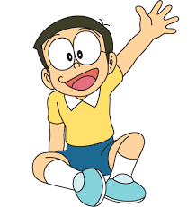
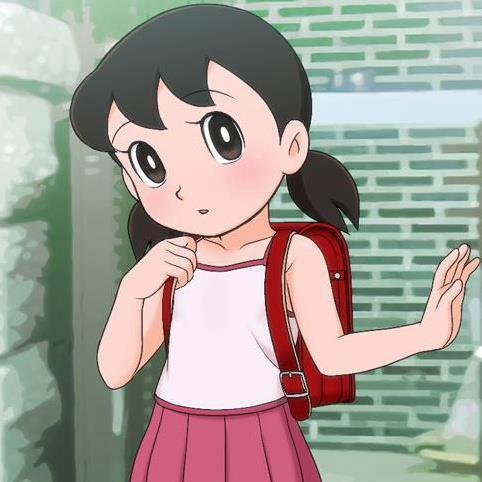
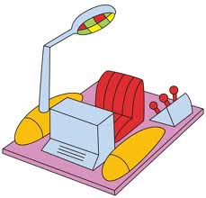

!DORAEMON!
Table of Contents
What is Doraemon
Doraemon (ドラえもん) is a series of Japanese mangas written by Fujiko F. Fujio .
After gaining lots of fame from the manga series, brief animated series in 1973 by Nippon Television was aired.
Doraemon remained fairly exclusive in manga form until 1979 when a newly formed animation studio,
Shin-Ei Animation ( Now owned by TV Asahi) produced an anime series of Doraemon.
This series became incredibly popular, and ended with 1,787 episodes on March 25, 2005
Main Charcters
• Doraemon ( ドラえもん )

Doraemon is a robotics cat made from the year 2116, in a factory named Matsushiba Robots. He comes to Nobita to help him get through hardships, by taking out gadgets from future from his 4d pocket, to help Nobita.
• Nobita Nobi ( 野比 のび太 )

Nobita Nobi, commonly known as Nobi, is a sore loser who likes comics and always gets very low marks in schools resulting to get hit my his mother every time.
• Shizuka Minamoto ( 源 静香 )

Shizuka Minamoto, commonly known as Sue, is a girl who is very smart, athletic, kind, sweet, friendly, gentle and basically a perfect girl in your dreams.
• Takeshi Gouda ( ジャイアン )

Takeshi Gouda, commonly known as Gian, is a fat, inflated charcter who bullies Noby all the time. One of his talents is singing horrendously.
• Suneo Honekawa ( 骨川スネ夫 )

Suneo Honewaka, commmonly known as Sneech, is a spoiled rich kid who likes to show off his new cool stuff to his friends. He is scrawny, and is recognized as sidekick of Gian.
Main story
Nobita is a little boy who lives in Japan. Nobita has a harsh life, like getting bad marks, getting bullied in school.
Then, a robot cat called Doraemon comes from the future to help Nobita by using his futuristic gadgets that helps Nobita.
The Doraemon series is about adventures and stories Nobita and Doraemon goes through using the gadgets.
Gadgets
Doraemon has exactly 4,500 gadgets in his 4d pocket, but these are the 4 main ones you see in more than 1 episode.
- Anywhere Door

→ It can make you go anywhere if you think where you want to go before you enter the door
- 4D Pocket

→ It contains Doraemon's 4,500 gadgets. You can put anything in no matter how big it is
- Time Machine

→ It allows you to travel through any time period, whether in the future of past. It is located inside Noby's desk
- Take-Copter

→ It sticks to your head, propeller goes off making you able to fly
Songs
- theme song in korean
- theme song in japanese
- Band version of song
Back to the Top